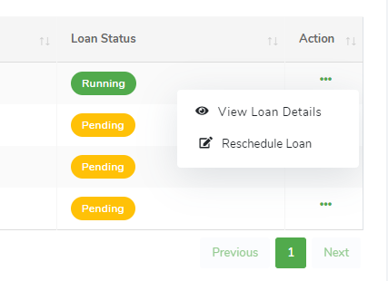

Working with Tables
Data from the IH Web application is frequently displayed in tables. Typically, the tables will have the following structure (Figure 17):
Figure 17: IH Tables
-
Table Length
In IH Web application, the table length option enables the user to determine the maximum number of rows of data to be displayed on each page of the table. By default, the minimum option is 10 but the table length options go up to a maximum of 100 rows of data. -
Export Options
Usually, tables in the IH Web application come with export options which enable the user to export the rows of data displaying on the current page of the table in different ways. The copy button copies the rows of data to the computer’s clipboard to be pasted elsewhere, the excel button exports the rows of data as a Microsoft Excel worksheet, the pdf button exports the rows of data as a PDF document, and the print button prints the rows of data. Note: The export options export only the rows of data that are displayed on the current page of the table, that is, after filtering, sorting or adjusting the table length. Further, exported data always excludes the Actions column. -
Filter Input Field
Users can filter the data in a table by typing key words into the input field to search the rows of data for matches with the key words. Clearing the input field resets the table to its default state. Filtering the table decreases the number of rows that are displayed and makes it easier for users to focus on specific data. -
Sort Option
Users can alter the ordering characteristics of the table based on a column in the table. By clicking the sort option in the column header, you can toggle between ascending and descending sorts for that column. When the sort option indicator points up, the column is sorted in ascending order. When the sort option indicator points down, the column is sorted in descending order. -
Row Actions
Clicking a row action will either display the view in an overlapping modal dialogue or as a new task or nested subtask view. Each row in the table represents a unique piece of data in the IH Web application for instance an employee, a salary structure or company department. Clicking on the row actions button lists the actions (Figure 18) that can be performed on each unique data for instance, users can view details or perform specific actions on the unique data. -
Table Information
The table information at the bottom of the table displays information about the table such as the number of records (rows of data) matching the filter criteria or the number of rows displayed on the current page, and the total number of rows in the whole table. -
Paginator
The paginator navigates between discrete pages in the table based on the maximum length of the page and the total number of rows in the table. For instance, if the maximum length of the page is the default 10 and there are more than 10 rows in the table, the user can click the next button or the specific page number in the paginator to move to the next or the specific page to display the remaining rows respectively.
Figure 18: IH Table Row Actions
|  |